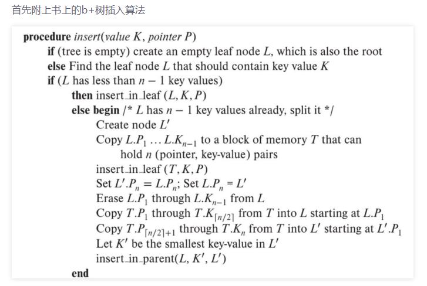
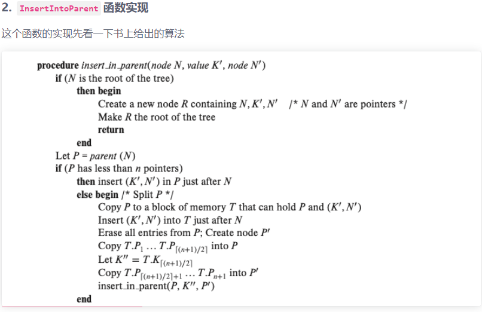
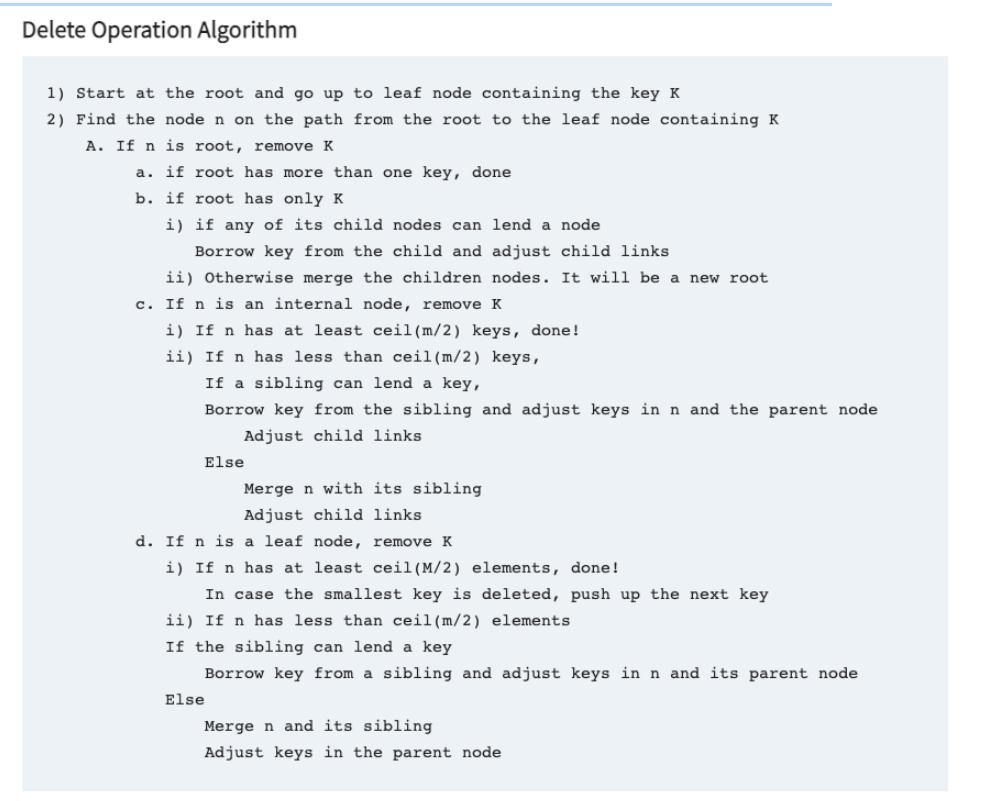

B+Tree
CMU15-445 2022 FALL
综合考虑之后开始重新做2022版本的数据库
写在前面
关于B+Tree这节真的难度很高，不仅难在B+Tree的数据结构组织以及各种功能函数的实现上
还有对于page的理解，需要知到page是什么还有怎么和page交互
还有就是这节没有帮你把所有功能函数全部列出来了
换而言之就是更大的自由空间，虽然还是殊途同归，但是相应的提示也是更少的
以及并发环境！
B+树这种数据结构是相当高效的，但是免不了各种数据的竞争，甚至是死锁….
貌似我们用一把大锁直接把页面锁住的方法行不通了
还有就是Transaciton的引入，好像要用这个东西来进行锁，在用户层应该就是事务，需要失败回滚的功能
……最操蛋的是我的linux虚拟硬盘要满出来了
Task 1
就是关于b+tree相关的页面的实现
如果只是实现原本的函数倒是没什么难得
但是我们要自己根据情况去添加函数，以便在后面的Task中能够使用
Task 2
B+ TREE DATA STRUCTURE
这边就是很难的地方了
我们要去实现B+树的插入和点查询
插入

这边这个是插入到父节点的函数实现

删除

- 从根节点开始向下取找包含key值为k的叶子结点
- 找到从根节点到叶子结点的所有包含k值的结点(page_id = n)
- 如果n是根节点的情况下
- 如果根节点有不止一个key，直接删除
- 如果根节点只有一个k
- 如果任意的一个孩子结点能够借出一个key组成一个新的结点并且调整孩子结点的连接
- 否则合并孩子结点组成新的根节点
- 如果n是internal node
- 如果有着至少m/2个key，直接删除
- 如果有着少于m/2个key
- 如果兄弟结点能借出一个key的话
- 从兄弟结点借出一个key放到n结点中然后调整孩子结点连接
- 否则
- 合并兄弟结点
- 如果兄弟结点能借出一个key的话
- 如果n是叶子结点
- 如果有至少m/2个元素，直接删除
- 假如最小的key被删除了，推给下一个（什么意思？
- 如果少于m/2个ke元素
- 如果兄弟结点可以借出一个key
- 直接从兄弟结点中借过来，然后调整父节点的从属关系
- 否则
- 合并n结点和兄弟结点
- 然后调整父节点从属关系
- 如果有至少m/2个元素，直接删除
- 如果n是根节点的情况下
再分析
怎么删除比插入还难….
一个key可能存在与于内部结点，但是不存在于叶子结点中
总的来说，我们从叶子结点上删除一个键值对
- 如果该结点太小了(少于最大值的半数)
- 我们从父节点上删除它
- 这样的删除需要用到递归算法，直到
- 根节点
- 或者父节点被删除一个key后仍然处于大于半满状态
- 或者运用重分配策略
主要就是三种操作
- 普通删除，有手就行
- 删除后发现太少，要进行重分配
- 删除后发现太少，而且不能重分配，那就要合并
并发
据说是最噩梦的环节，但是前面就已经给我卡的够呛了，不知道这边又会收到什么折磨
先来分析一下
基本原理
就是crabing latching，螃蟹锁
进行逐步加锁和逐步释放
新增成员变量
class operation enum{delete ,inesrt, serch}
用来进行判定相关操作
对之前的FindLeafPage进行升级
- 整体思路基本一致，但是要加上一些判断
- 读操作
- 直接加上锁，然后对上一层释放锁
- 写操作
- 释放锁之前要判断一下是否安全
怎么知道接结点是否安全呢？
- 插入情况下
- 只要当前node的size处于安全状态—>+1之后不会产生分列，则安全
- 删除状态
- node的size-1不会进行重配或者合并，就是安全的
- 对跟结点的特殊判断
- 如果这个跟结点是叶子结点即为安全
- 否则跟结点的大小必须大于2（2-1=1，即没有有效key值）
All articles in this blog are licensed under CC BY-NC-SA 4.0 unless stating additionally.